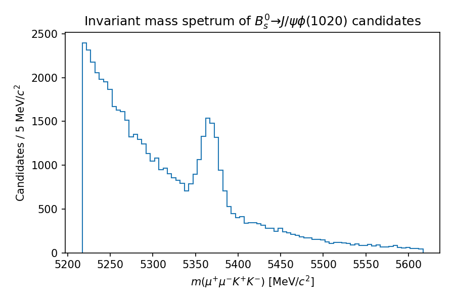

Physics at LHCb
Learning Objectives
Understand how detector signals are turned into objects in software
Learn how decay chains are built.
Note that this is a very high level introduction to a high-energy physics experiment, and misses many important details.
The software that these lessons will cover was designed to make the types of physics analyses most commonly performed at LHCb as easy as possible. When using that software, it is then important to understand how those analyses are done in order to understand why the software works the way it does.
At the highest level, a physics analysis tries to measure one or more properties of objects produced through some process. At LHCb, this is typically some production or decay properties of heavy flavour hadrons. Because these objects have short lifetimes they decay before interacting with the detector, and so we must infer their properties through their decay products. Particles such as charged kaons and pions have lifetimes large enough that a large fraction can traverse the full detector, and so we typically consider these particles as ‘stable’. Unstable objects, with much shorter lifetimes, are formed as combinations of these ‘stable’ particles[^1]:
Charged pions \( \pi^{\pm} \)
Charged kaons \( K^{\pm} \)
Protons \( p/\bar{p} \)
Electrons \( e^{\pm} \)
Muons \( \mu^{\pm} \)
Photons \( \gamma \)
Deuterons (deuterium nuclei)
Many properties of these objects, such as their momentum and charge, are intrinsic, but we have to infer them based on the signals they create in the detector as they traverse through it.
The reconstruction
The properties of particles produced in collisions are known to Nature, but we must reconstruct those properties based on the readout of the detector. The process of inferring all properties is called reconstruction. For a given proton-proton collision the reconstruction of all the objects is performed simultaneously, e.g. one does not try to reconstruct one kaon, but reconstructs all charged tracks at the same time, considering all available information.
An important output of the reconstruction is a set of tracks, each representing the trajectory of a particle through the detector. Given that all stable charged particles listed above have charge ±1, we can assign a momentum estimate to a track based on its curvature, as induced by the LHCb dipole magnet. We know the polarity of the magnet, as well as its field strength, so can also infer the associated particle’s charge.
A vertex represents some source of particle production in space. When proton-proton bunches collided, several primary vertices can be created in the interaction region. We can reconstruct primary vertices by looking for intersections in space of large numbers of tracks.
Much more detail on the LHCb reconstruction can be found in the LHCb detector description and Run 1 performance papers (these are both rather long, but worth taking the time to read). It is recommended that you become familiar with at least the aspects of the reconstruction that are relevant to your analysis. For now, we only need to understand tracks and vertices, and how decays can be reconstructed and selected from these.
Building decay candidates
All objects created by the reconstruction contain contributions from detector effects, such as resolution. In addition, not all created objects may correspond to real particles; we could for example create ‘ghost’ tracks, trajectories created from combinations of random hits that together look like a real trajectory.
Given this, we can never know anything with complete certainty. Instead we must infer properties statistically based on ensembles of objects and events.
Let’s say we want to count the number of \( J/\psi \) mesons that decay to two muons, \( \mu^{+}\mu^{-} \). This proceeds via three steps:
Select tracks created by the reconstruction;
Create pairs of oppositely-charged tracks;
Fit each pair under the hypothesis that they originate from a common point in space.
We’ll go over each of these steps, starting with tracks produced by the reconstruction. Naturally, there are many of these in any given event, typically hundreds, so we begin be applying selections on the tracks based on our physics understanding. For example, the \( J/\psi \) is quite heavy (at around \( 3.1\,\mathrm{GeV}/c^{2} \)), so we might expect its decay products to have a higher momentum on average than objects produced from soft processes in the collision. The reconstruction gives us some probability-like information for a given track to have been created by a true muon, so we might require that the tracks we use have some minimum ‘muon probability’.
With a reduced set of a tracks, we can create all pairs of opposite-sign muons. We know that a real particle decay happens at a point in space, so we could require that the distance of closest approach between the two muons does not exceed some maximum value. We could further require that the invariant mass of the dimuon combination is close to the known mass of the \( J/\psi \), invoking the conservation of momentum.
With selected dimuon pairs, we can fit a \( J/\psi \to \mu^{+}\mu^{-} \) decay vertex. This is done by expressing the hypothesis that there is a common origin vertex of both tracks as an optimisation problem, and then varying the measured \( \mu^{+} \) and \( \mu^{-} \) four-momenta within their measured uncertainties to best fit that hypothesis. The result is a vertex object which has, for example, a fit \( \chi^{2} \) associated to it. The quality of the fit can be used in a selection.
Finally, with the fitted muon four-vectors, we can form the four-vector of the \( J/\psi \) as their sum, creating the \( J/\psi \) candidate[^2]. Now we get back to our original goal of measuring the number of true \( J/\psi \to \mu^{+}\mu^{-} \). By plotting the \( J/\psi \) invariant mass values as a histogram, we might hope to see a signal component. An example is shown in the following plot, created using simulated toy data.

We could choose to model the components using probability density functions, and fit the total model to this histogram. The relative normalisations of the components can be used to deduce the fraction of the sample which contains true decays, within some uncertainty.
Building more complex decays
With a set of \( J/\psi \) candidates, we could build more complex decay chains such as \( B_{s}^{0} \to J/\psi\phi(1020) \). The \( J/\psi \) and the \( \phi \) meson can decay in various ways, but we might choose to reconstruct them in the \( \mu^{+}\mu^{-} \) and \( K^{+}K^{-} \) final states, respectively. The \( \phi \to K^{+}K^{-} \) candidates can then be reconstructed in a similar manner to that described previously for the \( J/\psi \) decay. With a set of \( J/\psi \) and \( \phi \) candidates, we can then build \( B_{s}^{0} \) meson candidates by combining the two decay products in another vertex fit. If our selection is clean enough, we may then see a \( B_s^{0} \) signal peak, shown below (again, using toy data).

As we’ll see in the following lesson, lots of selections like these are run centrally and produce output datasets that contain a mixture of decay chain candidates. This course will show you how to extract the candidates and their properties that are relevant for your analysis.
[^1]: Other ‘stable’ particles under this definition include neutrons \( n \) and the long-lived neutral kaon weak eigenstate \( K_{\mathrm{L}}^{0} \), but these are not part of standard reconstruction output.
[^2]: ‘Candidate’ because, again, we never know anything with complete certainty; this could be combination of muons that just happen to pass our selection criteria.